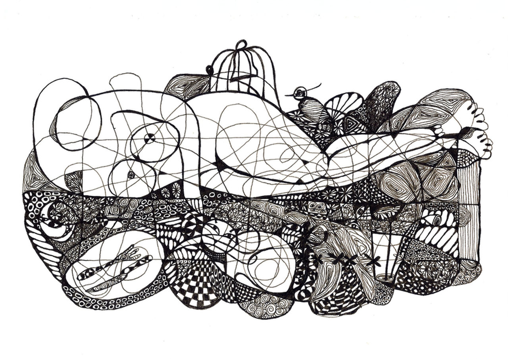
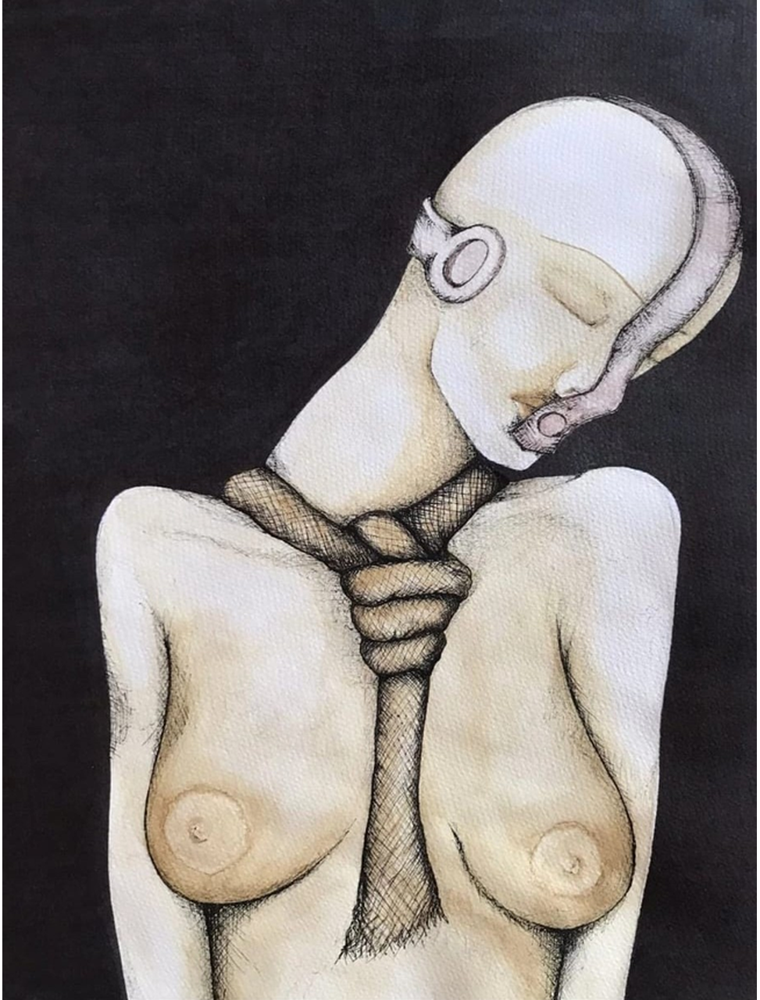
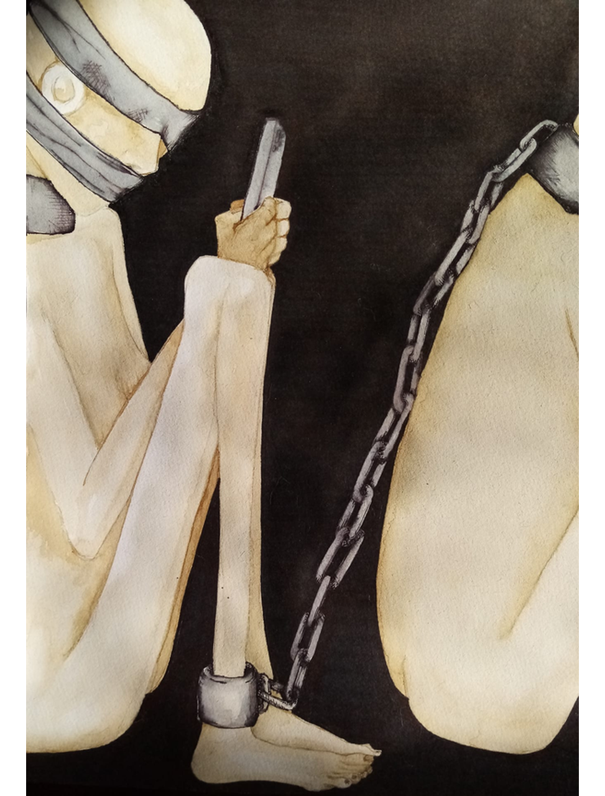
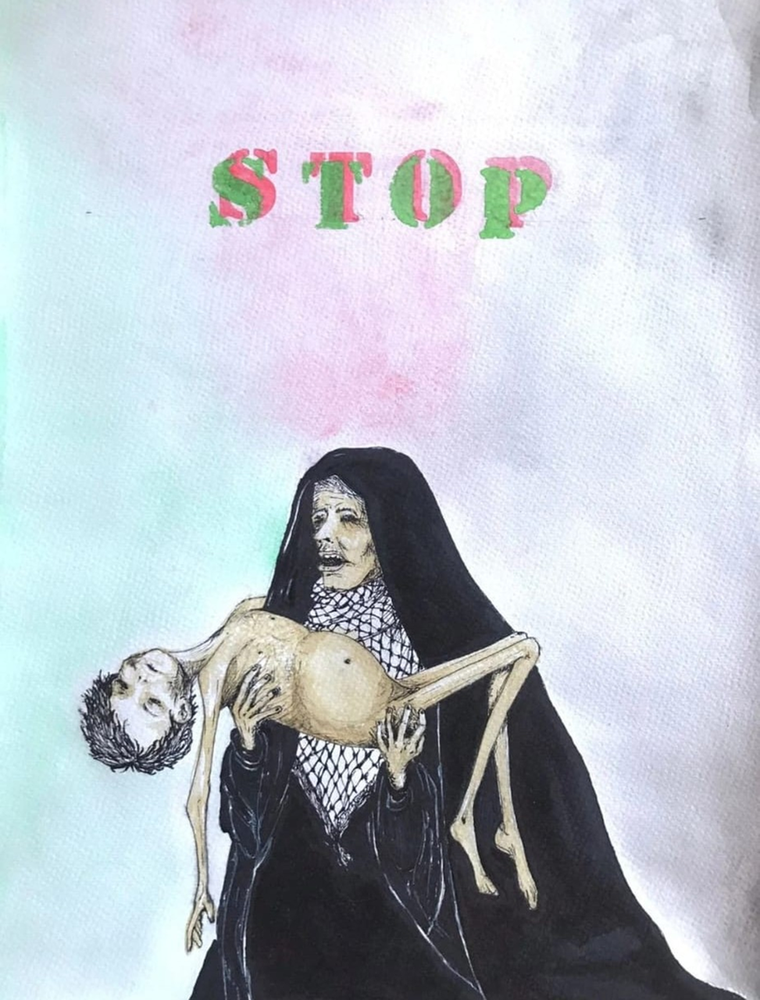
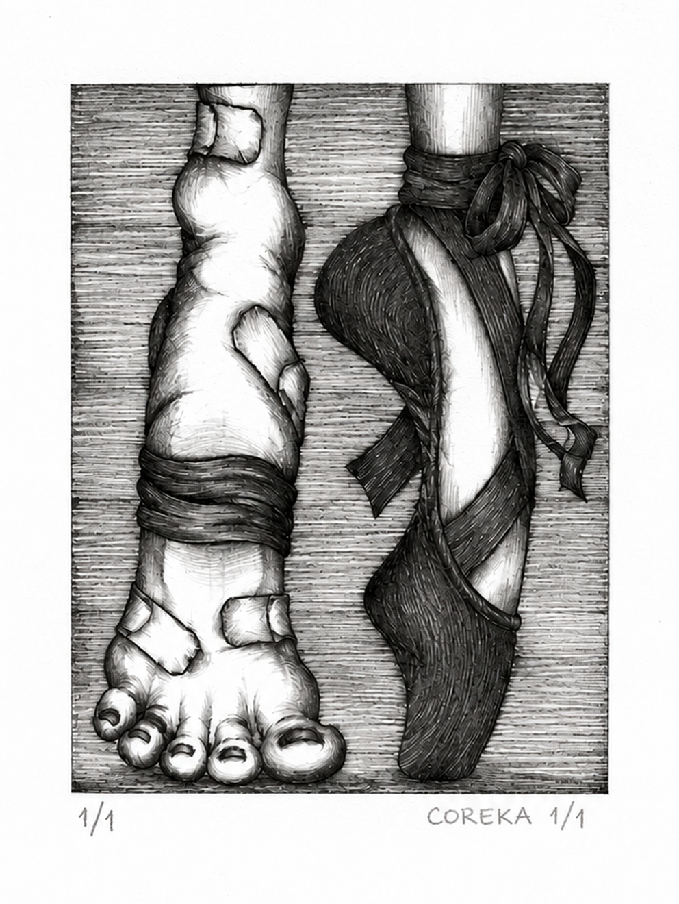

DIBUJO / TÉCNICAS MIXTAS / GRABADO
Ilustración de autor
Selección de obras independientes. La línea, el cuerpo y la huella conectan técnicas y momentos distintos de la práctica de COREKA.

Maja

Feminismo

Fragmento

STOP

Dolor
La serie MFR reúne tres obras presentadas en la exposición colectiva de Madrid For Refugees de septiembre de 2015.